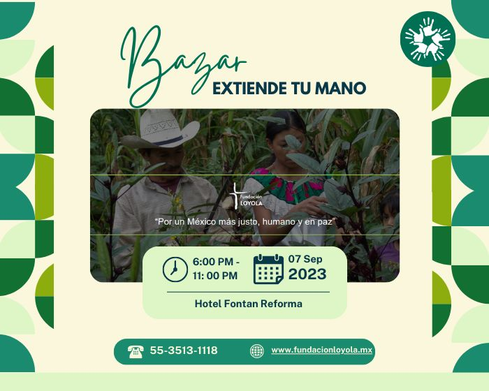

Bazar
¿Te gustan los bazares? ¿Te interesa ayudar a diferentes comunidades? Te invitamos a nuestro mercado de comercio justo.
En este bazar podrás encontrar desde productos hasta productos, todos producidos por nuestros beneficiarios.
El bazar además de recaudar fondos, también apoyará a emprendimientos y negocios locales de las comunidades vulnerables
¿Dónde es?
Este moderno hotel con fachada de cristal se encuentra a 3 minutos a pie de la estación de metro Hidalgo, a 11 minutos del histórico centro cultural Palacio de Bellas Artes y a 1.8 km del Zócalo, la plaza principal de la ciudad.